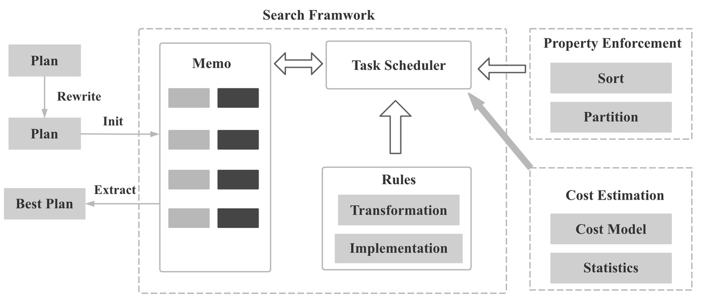
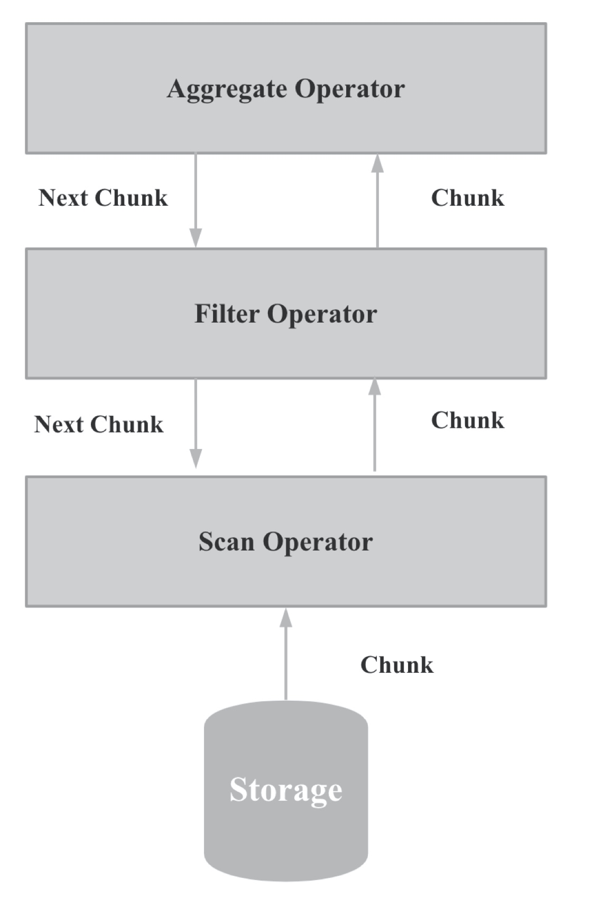
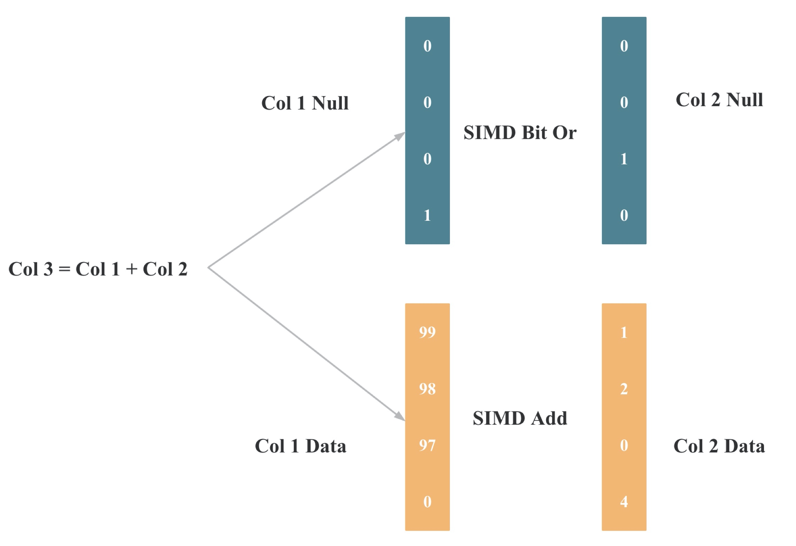

StarRocks 源码导读一
作者: 康凯森
日期: 2021-09-12
分类: OLAP
2021年9月8日，我司鼎石科技开放了核心数据库产品 StarRocks 源码：https://github.com/StarRocks/starrocks，StarRocks 基于 Apache Doris 开发，我们十分感谢 Apache Doris 社区贡献了这样一个优秀的OLAP数据库，也感谢所有向 Apache Doris 贡献过的同学，让我们可以站在巨人的肩膀上快速前进和迭代，不过 StarRocks 和 Apache Doris 已经有了很大的不同，我们新增和修改的代码行数达到了几十万行，我将分两篇文章对 StarRocks 的源码进行导读，这篇文章主要介绍 StarRocks 全新的 CBO 优化器和向量化执行器。
StarRocks CBO 优化器
如果一条SQL的执行是一场旅程，查询执行器就是你的交通工具，你的交通工具性能越好，在相同的路径下，旅程的耗时自然越短。但是从旅程的出发点到终点可能有成千上万条路径，有康庄大道，也有林荫小路，而查询优化器的作用就是选择出最短，最合适的道路。 一般 SQL 越复杂，数据量越大，查询优化器的意义就越大，因为不同执行方式的性能差别可能有成百上千倍。
一条 SQL 查询时会依次需要经过查询解析器，分析器, 优化器，查询执行层和存储层。 查询优化器的输入是一颗逻辑的抽象语法树，输出是一颗“最优的” 物理执行计划。 查询越复杂，数据量越大，物理执行计划的好坏对查询性能影响越大，所以一款成熟的商业数据库都需要一个强大的，成熟的查询优化器。
StarRocks 全新的 CBO 优化器主要基于 Cascades，Columbia，ORCA 论文实现，也参考了 ORCA，Presto，Calcite，CMU Noisepage，CockroachDB 等项目，核心优化流程基本和 Columbia 一致，在具体工程实践中，我们进行了很多优化与创新。
整个 CBO 优化器的流程如下所示，SQL Parser 部分和 Apache Doris 相同，我们暂时还没有进行重写，我们的重写是从 Analyzer 部分开始，整个CBO 优化器的代码都位于 SQL 目录下

如果你对 CBO 优化器感兴趣，推荐先阅读 Columbia 论文，这篇论文比较通俗易懂，论文中涉及的基本概念我在本文中就不再赘述。
StarRocks Analyzer
StarRocks Analyzer 代码在 Analyzer 目录下，主要完成了 表名，列名的识别和解析(Binder)，SQL合法性检查，SQL重写，函数检查，别名处理。 核心类是 QueryAnalyzer 和 ExpressionAnalyzer, Analyzer的结果是一个有层级结构的 Relation。
StarRocks Relation To Logical Plan
代码在 transformer 目录下 核心类是 RelationTransformer，QueryTransformer，SubqueryTransformer。
StarRocks Logical Plan Rewrite
主要完成了：
- 各种表达式的重写和化简
- 列裁剪
- 谓词下推
- Limit 下推
- 等价谓词推导（常量传播）
- Outer Join 转 Inner Join
- 常量折叠
- 公共表达式复用
- 子查询重写
- Lateral Join 化简
- 分区分桶裁剪
- Empty Node 优化
Rewrite Task 的驱动在 Optimizer类 ，各种 Rewrite的Rule在 rewrite 目录
StarRocks Cost Based Optimize
StarRocks 整个搜索框架如下图所示：

我们在 Logical Plan Rewrite 完成后，正式基于 Columbia 论文进行 CBO 优化，主要包括下面的优化：
- 两阶段聚合优化
- Join 左右表调整： StarRocks 是用永远用右表构建 Hash 表，所以右表应该是小表，StarRocks 可以基于 cost 自动调整左右表顺序，也会自动把 left join 转 right join。
- Join 多表 Reorder：多表Join 如何选择出正确的Join 顺序，是优化器的核心，当Join表的数量小于等于5时，StarRocks 会基于Join 交换律和结合律进行 Join Reorder，大于5时，StarRocks 会基于贪心算法 和动态规划进行 Join Reorder。
- Join 分布式执行选择：StarRocks 支持地分布式Join 方式有Broadcast，Shuffle, 单边 Shuffle，Colocate，Replicated。StarRocks 会基于 Cost 估算 和 Property Enforce 机制选择出 “最佳” 的 Join 分布式执行方式
- Push Down Aggregate to Join
- 物化视图选择与重写
CBO 优化的 几个核心数据结构是 Memo， Group, GroupExpression, OptExpression, 位于 optimizer 目录下， 搜索框架位于 task 目录下 包括 OptimizeGroupTask，OptimizeExpressionTask， ApplyRuleTask，DeriveStatsTask，EnforcerAndCostTask，其中最核心和最复杂的是 EnforcerAndCostTask，Transformation 和 Implementation 的各种 Rule 位于 rule 目录下，你可以在 RuleSet 类 中找到所有的Rule。
在 CBO 优化中，Logic Plan 会先转成 Memo的数据结构，(Logic Plan 到 Memo 的映射如下图所示)，然后会基于 Transform Rule 扩展搜索空间，基于 Implement Rule 将 Logical Group Expression 转换成 Physical Group Expression，基于统计信息和 Cost 估计从 Memo 中选择一组 Cost 最低的 Physical Group Expressions，最后将选择的 Physical Group Expressions 转成 Physical Plan tree.

StarRocks 统计信息收集
Cost 估算的基础是统计信息估算，统计信息估算的基础是统计信息收集。 StarRocks 目前支持表级别和列级别的统计信息，支持自动收集和手动收集两种方式，无论自动还是手动，都支持全量收集和抽样收集两种方式。
StarRocks 统计信息收集内容和收集框架如下图所示。

StarRocks 统计信息收集的代码位于 statistic
抽样统计信息收集的难点在于如何根据抽样得到的统计值估算出整体数据的统计值，一旦选择抽样收集的方式，误差就很难避免。
StarRocks Cost 估算
统计信息估算和 Cost 估算是整个 CBO 优化器最关键的部分之一，其中每一个公式和系数的改动，都会对最终的 Plan 产生很大的影响，这一块也是业界一直在研究的热点，统计信息估算和 Cost 估算的难点体现在下面几个方面：
- 数据分布不是完全均匀的
- 多列之间的数据特征不是完全独立的
- 一些函数和复杂表达式的选择率无法较好地估计
- 基于多个维表的谓词去估算事实表的基数时，很难估算准
- 基数估计的误差会被层层放大
统计信息估算和 Cost 估算 的代码 位于 statistic 目录 和 cost 目录 下
StarRocks 如何优化搜索耗时
- 提前 Rewrite (预处理)：在进入优化阶段之前，对表达式 进行 Rewrite， 对整个Plan 进行 肯定会变优的Rewrite，降低优化时的搜索空间大小
- Multi-Stage Optimization：分多个Stage 进行优化，每个Stage 只应用部分Rule，越复杂的Rule 应用地越靠后
- 按需 Explore group：Logical transformation 和 Physical implementation 不会分两阶段执行，对于一个 Group，不必生成完所有的逻辑表达式。通过transformation rule 生成的逻辑表达式 会立即被 implemented 成物理表达式并计算 cost。这种实现方式可以基于 Cost 进行快速裁剪，避免枚举低效的 Plan。 例如，我们计算
((A join B join C) join D)的 cost， 如果 先((A join B join C)， 再 join D 的 cost 已经大于了((A join B) join (C join D))的cost， 我们就可以进行快速裁剪，避免对(A join B join C)进行 join order 的枚举。 - Upper bounds Pruning: 如果当前 Group 的 lower bound 大于当前 context的 UpperBound，我们就没有必要继续enumerated 当前 Group 的 input groups
- 记忆化: 利用 Bitmap 去重，保证一个Group 不会用同一个Rule重复优化
- Group 支持删除（替换）: 如果经过 Transform Rule 后生成的新Group Expression 一定比旧的好，我们可以把旧的Group Expression 从Group 删除，或者使用新的Group Expression 直接替换掉旧的 Group Expression，这样可以降低搜索空间的大小
- Multi Join Reorder： 多张表Join reorder 时，按照Multi-Join 或者N-Array join 一起处理，而不是一个一个处理
- 搜索终止条件：找到了低于 Cost threshold 的Plan；超时；转换规则已用尽
StarRocks CBO 优化器理论和实践的差别
虽然几篇论文理论描述的都比较详细，但是我们在实践过滤中，好多关键点和论文并不相同，或者论文没有描述，下面简单罗列几点
- ExploreGroupTask 在论文的搜索流程中是存在的，但是我们没有用到
- 如何正确和快速地 Merge 两个 Group
- Project 节点的处理：有了 Project 之后，Join的 Reorder 就会比较麻烦
- 如何禁掉特定的Plan：由于查询调度和查询执行可能无法支持某些Plan，为了保证得到正确的结果，我们必须禁掉特定的Plan
- 查询优化器需要和查询调度器紧密配合：在分布式环境下，StarRocks支持了 Broadcast，Shuffle, 单边 Shuffle，Colocate，Replicated 多种Join 分布式执行方式，对于上面多种分布式执行策略，查询调度也必须能够支持
- 在分布式环境下，Enforce 出来的 Sort 节点可能既需要按照1阶段执行，也需要按照2阶段执行
- 多个 Enforce 属性的处理
- Logical Plan 的 Rewrite 是基于 Memo 还是 Tree 实现
- Group 的统计信息推导进行一次是否足够
- 。。。
StarRocks 向量化执行器
StarRocks 从零实现了向量化执行器，向量化执行主要分为算子的向量化和表达式的向量化执行，存储层的向量化。向量化执行的核心是批量按列执行， 批量执行，相比传统的按行执行，可以有更少的虚函数调用，更少的分支判断，按列执行，相比于按行执行，对CPU Cache 更友好，更易于SIMD优化。
向量化的基数数据结构是 Column 和 Chunk，其代码位于 column 目录下

StarRocks 算子向量化

算子向量化的核心思路主要是将之前 get_next 拉取一个 RowBatch 变成 拉取一个 Chunk, 算法中的按行处理 变成 按列处理。
算子向量化的大部分代码位于：exec / vectorized 目录下
算子向量化的难点在于 多列聚合的向量化，多列 Join的向量化，多列 Sort的向量化，Shuffle的向量化，内存申请释放上的优化。
StarRocks 表达式向量化

表达式向量化的核心思路主要是将之前的表达式按行处理变成按列处理，上图是一个加法向量化的示意图。
标量函数和表达式的向量化代码位于 exprs / vectorized 目录下
聚合函数表达式向量化的代码位于 exprs / agg 目录下
窗口函数向量化的代码位于 window.h
Table Function 向量化的代码位于 exprs / table_function 目录下
表达式向量化的难点在于如何处理编译器自动进行SIMD 指令优化，以及如何显式进行 SIMD 指令优化。
StarRocks 存储层向量化
存储层向量化主要包括：
- 存储层按照每一列的Page 读取数据后，直接瓶装成 Chunk 数据结构
- 向量化过滤
- 聚合模型的向量化聚合
存储层向量化的代码主要位于 storage/vectorized 目录 和 storage/rowset/vectorized 目录 下，查询时涉及的核心类是 segment_iterator
存储层进行了自适应延迟物化，自适应聚合，Operations On Encoded Data的优化。
延迟物化的示意图如下：

Operations On Encoded Data的示意图如下：

StarRocks SIMD 优化
我们在实现向量化执行器过程中，会尽量想办法触发编译器的自动 SIMD 优化，不能自动触发的，会尝试进行手动 SIMD 优化。 手动 SIMD 优化的代码直接全局搜索 SSE 和 AV2 就可以看到。
下图中列出了我们部分进行手动 SIMD 优化的操作：

StarRocks 自适应优化
我们知道，不同的数据分布或者数据特点往往需要不同的算法或者数据结构进行处理，所以在 StarRocks 向量化引擎中，我们进行比较多的自适应优化。
除了上面提到的存储层的自适应预聚合，自适应延迟物化。我们在下面几处也实现了自适应优化：
- Runtime Filter 过滤： 有过滤度时再进行过滤，没有过滤度时就不再进行过滤
- 聚合 Hash Map的使用： 低基数时直接使用phmap::flat_hash_map, 高基数时使用 phmap::parallel_flat_hash_map
- 两阶段 Streaming 聚合时：有聚合效果是进 Hash 表，没有聚合效果时直接发送数据
- 多个 Filter 过滤时何时进行 Chunk 重整
StarRocks 如何进行性能优化
和 CBO 优化器不同，大家可以看到向量化执行本身框架上的风险不大，所以不同系统向量化执行器的最终效果如何，其实就是看细节上的性能优化。
StarRocks 的性能优化主要从 5 个方面进行：
- 算法和数据结构的选择：算法和数据结构是最基础的，但有些情况下的选择和优化却并没有那么简单。 比如：进行 Int 类型去重时，我们应该选择Bitmap 还是 HashSet, 其实是不一定的，因为两者都有明显优势的场景
- 自适应： 在进行性能优化时，如果我们知道的上下文足够多，我们就可以进行更多针对性的优化，但是有些上下文可能只有在运行时我们才能知道，所以此时我们就需要进行自适应策略
- SIMD 指令优化： 在按列处理的前提下，尽可能自动或者手动进行SIMD 指令优化
- C++ Low Level 优化： 比如 Copy To Move，不同API的选择，编译期运算，memcpy, memcmp, 异步，锁等。 有些规则可能大家都知道，但是实际实现时就可能忽略或者没有意识到，比如 大对象的 Move，很多时候一个细节的不注意，就变成了 Copy
- CPU Cache 优化：当我们 CPU 指令的个数和效率已经优化到最佳的时候，我们就需要优化 CPU Cache 了。 包括 内存对齐，Padding,时间和空间局部性优化，Prefetching，Cache Blocking，更紧凑的内存布局，Cache Line Conflict， Code Cache 优化。
关于后面4点，我之后会写文章详细说明和解释。
结语
本文主要进行了 StarRocks CBO 优化器和向量化执行器两个模块的源码导读，下一篇文章会进行 Pipeline 并行执行引擎，Update 存储引擎，导入和 Compaction 向量化，Hive 外表，Global Runtime filter, Lateral Join, Fast Decimal, Array 类型 等模块或者功能的源码导读。
如果你对数据库研发，测试，解决方案，DBA，销售感兴趣，欢迎将你的简历发送到 kangkaisen@starrocks.com。
《OLAP 性能优化指南》欢迎 Star&共建
欢迎关注微信公众号